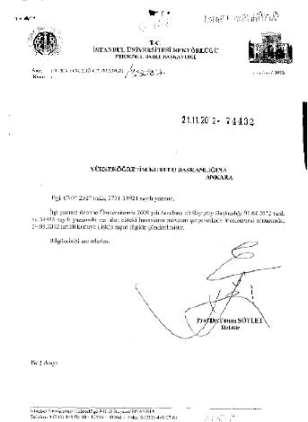

Uludağ Üniversitesi
Uludağ Üniversitesi’nin, öğrencilerin ödediği harçların 535 bin TL’lik kısmını doğrudan üniversite bütçesine aktarıp kayıt altına alması gerekirken, usulsüz olarak Uludağ Üniversitesi Güçlendirme Vakfı’na aktardığı belirtiliyor. Rektörlüğün harçları bağış gibi göstererek aktarımı yaptığı, temizlik ihalesinde de 12 milyar 112 milyon 530 bin TL’lik yolsuzluk yaptığı iddia ediliyor.
Üniversitenin eski rektörü Mustafa Yurttkuran, öğrenci harçları ve personel maaşları karşılığında Garanti Bankası’ndan aldığı promosyon ücretini, üniversite gelirlerine değil, üniversite vakfına aktarırken paranın burada birçok başlıkta kullanıldığı ve üniversitenin zarara uğratıldığı tespit edildi.
Bu kapsamda vakfa aktarılan paranın tam 535 bin TL olduğu tespit edildi.
